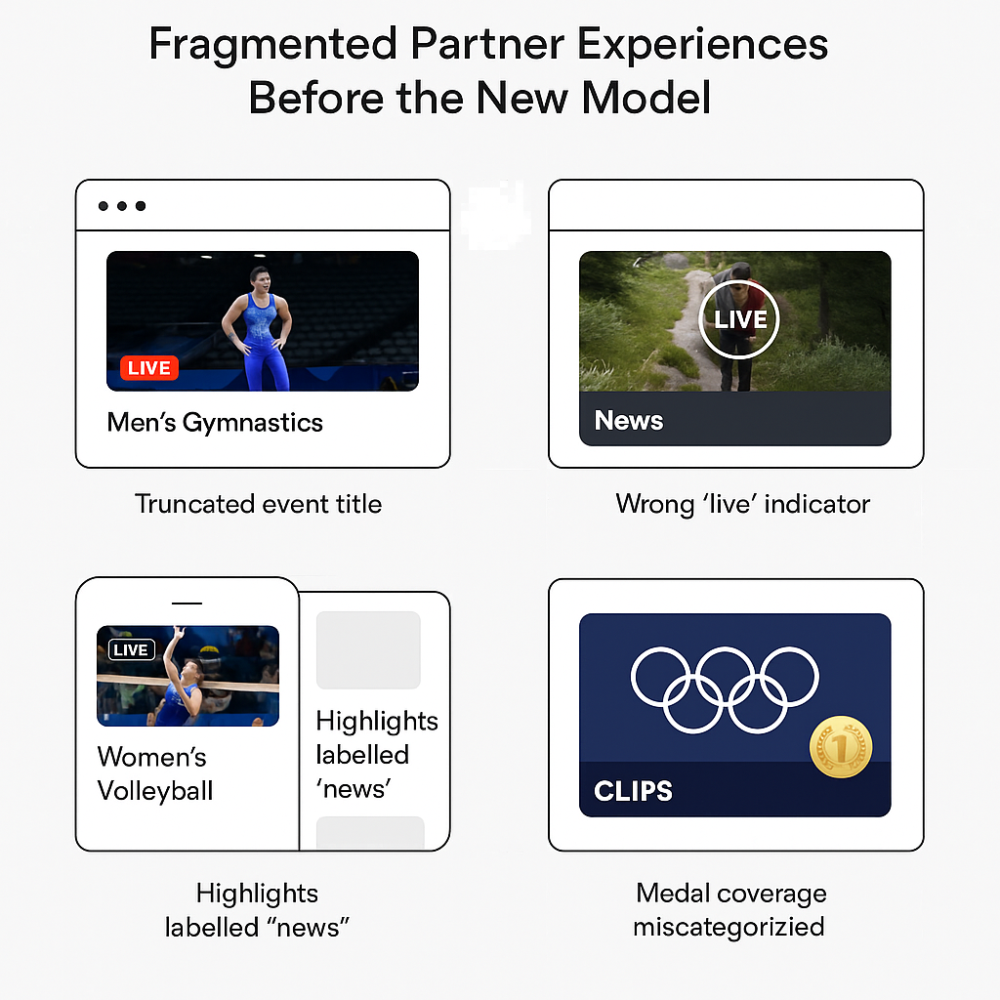
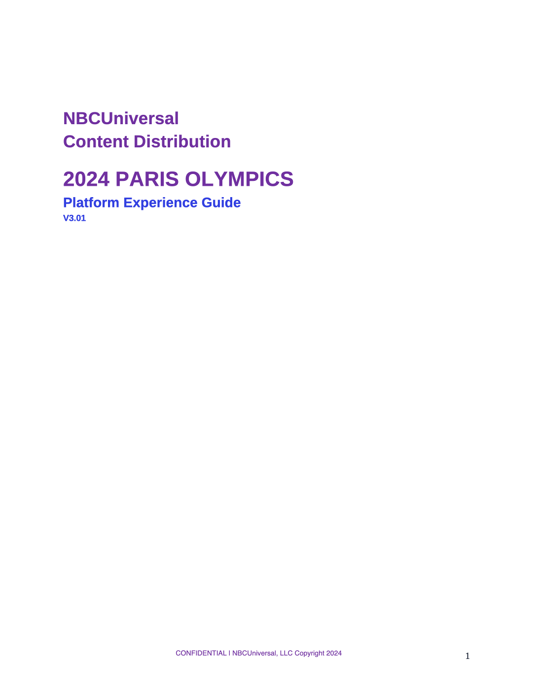
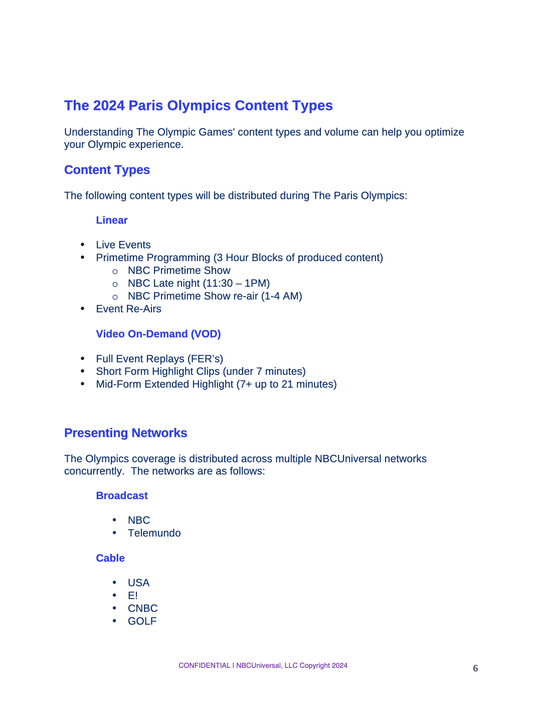
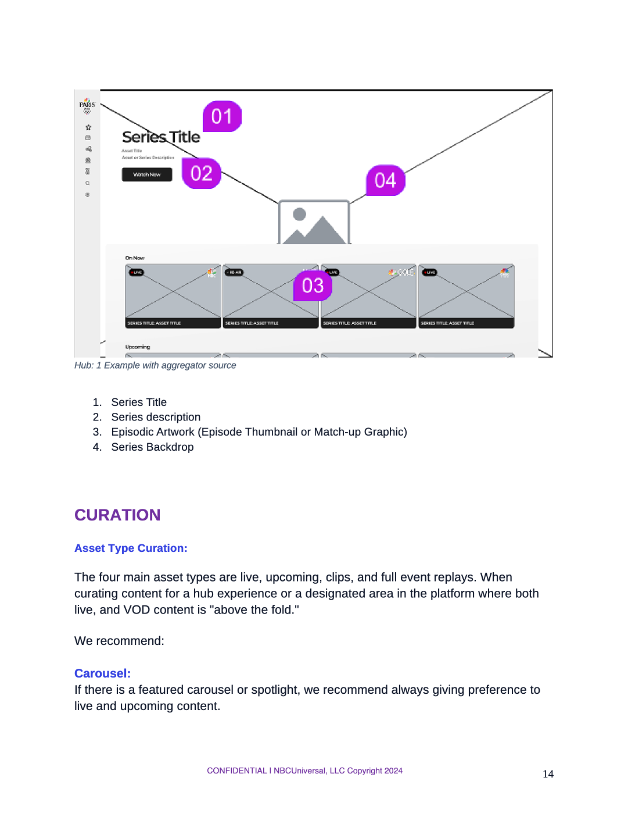

Designing a source of truth for partner experiences
For the 2024 Paris Olympics, millions of viewers would experience the Games through partner platforms: MVPDs, vMVPDs, connected devices, FAST channels, and more. Each of those platforms has its own layouts, ingestion workflows, and constraints, but the Olympic experience still needed to feel coherent, clear, and aligned with IOC and USOPC standards.
To make that possible, I authored the Platform Experience Guidelines: a living document that explains how to design Olympic hubs, where to source artwork and metadata, how to structure navigation, and how to curate rails for live, upcoming, highlights, and full event replays. It’s both a content design system and a product playbook for partner UX teams.
One brand, many platforms, endless ways to diverge
Without a shared framework, each partner could interpret Olympic content differently. Live events might be buried under generic “Sports” trays. Highlights could be labeled as “clips” in some destinations and “news” in others. Medal moments, featured athletes, and Team USA content might be inconsistently surfaced or not surfaced at all.
On top of that, every destination needed to respect IOC and USOPC branding constraints, while also fitting into the partner’s existing product patterns. The risk was a fragmented landscape where the Olympic story felt different everywhere, and NBCU teams had to answer the same design and metadata questions again and again.

Authoring the Platform Experience Guidelines
Defining the information architecture of the guide
I began by structuring the document itself as a product: an indexable, skimmable experience that partners, engineers, and marketers could all navigate quickly. It starts with why the guide exists and how IOC/USOPC approval works, then walks through submission processes, design development, and preferred formats for wireframes, annotations, and journey maps. :contentReference[oaicite:1]{index=1}
Connecting artwork, metadata, and UX
A large portion of the guidelines explains where Olympic artwork and metadata come from (Gracenote, NBCU PX APIs, manual delivery, and the Paris 2024 Resource Site) and how those sources should be used to drive hubs, rails, and thumbnails. I translated raw feed information into concrete rules:
- Which artwork types to use for series, events, and VOD collections.
- How to rely on Gracenote as the primary art + metadata source.
- When and how to layer in PX’s enhanced metadata endpoints.
Establishing UX patterns and curation hierarchy
I defined the recommended hierarchy for Olympic destinations: prioritize live programming and upcoming events above the fold; use dedicated rails for full event replays; and highlight short-form and mid-form clips in separate, clearly labeled trays. I then added examples and diagrams showing how this hierarchy maps to real layouts.



From broadcast complexity to partner-friendly patterns
Clarifying content types
The guide begins with a content primer: live events, primetime programming, event re-airs, full event replays, short-form highlights, and mid-form extended highlights. By defining the full palette of Olympic content, partners can make intentional decisions about what to feature and how to balance long-form and short-form experiences. :contentReference[oaicite:2]{index=2}
Specifying artwork and metadata usage
I documented the four major video artwork types (series key art, episodic art, VOD sport art, and event thumbnails) and showed how they should be applied in rails, carousels, and hubs. Partners learn that Gracenote is the primary art source, with PX APIs and the Paris 2024 Resource Site providing enhanced and bespoke assets for special curation needs.
Designing Olympic hub layouts
The guidelines include annotated hub wireframes describing a typical “above the fold” Olympic destination: a hero or marquee for live and upcoming events, rails that distinguish clips from full event replays, and supporting navigation for sports and athletes. I used callouts to show which metadata fields drive each UI element.
Using curated feeds to tell the Olympic story
Beyond basic schedules and replays, the guide introduces enhanced curation tags that partners can use to build richer destinations:
- Medal Moments: trays and pages focused on medal-deciding events and ceremonies.
- Featured Athletes: a curated set of Team USA stars and other notable competitors.
- Team USA: content centered around American athletes and storylines.
- Must See and ICYMI: recent, defining, and spoiler-aware highlight collections.
I documented what these tags mean, how they’re exposed via PX endpoints, and provided layout examples showing how partners can turn these feeds into dedicated sections or trays without breaking narrative consistency.
Design details that scale across destinations
Olympic pictograms as navigational building blocks
The guidelines encourage partners to use the official 2024 Paris Olympics sport pictograms as filters or navigation, paired with clear text labels. I provided recommendations on where to integrate them—sport rails, sport hubs, or filter bars—and how to ensure they remain legible and inclusive. :contentReference[oaicite:3]{index=3}
Accessibility as a core requirement
The accessibility section emphasizes that Olympic and Paralympic experiences must be usable by people with diverse abilities. I framed this not as an afterthought, but as part of NBCUniversal’s core values—encouraging partners to prioritize contrast, readable typography, clear focus states, and inclusive motion and labeling.
From first mock to IOC-ready destination
To make the guidelines actionable, I defined a clear partner workflow:
- Design development with access to PX UX and front-end leads.
- Virtual reviews of staging builds or interactive demos.
- Submission preparation with guidance on packaging hi-fidelity mocks and annotations.
- Final submission 45 business days before destinations go live.
- PX office hours during Trials and in the weeks leading into the Games for QA with real metadata.
This workflow meant partners weren’t just handed a PDF—they were supported throughout the process, with the guidelines acting as the anchor for every conversation.
What the guidelines unlocked
For partners
- A single, authoritative reference for Olympic UX decisions.
- Clear expectations for artwork, metadata usage, and layout patterns.
- Reduced back-and-forth with NBCU teams over details and edge cases.
For viewers
- More predictable destinations, with live and upcoming programming easy to find.
- Better discovery of medal moments, featured athletes, and Team USA stories.
- Consistent labeling and content hierarchy across different services.
For NBCUniversal
- Higher compliance with IOC/USOPC guidance and brand standards.
- Reduced partner support overhead and fewer last-minute UX corrections.
- A scalable template for future tentpole events like Milan Cortina 2026.
What this taught me about platform experience design
Crafting these guidelines reinforced that platform experience work lives at the intersection of UX, content strategy, metadata architecture, and partner operations. It’s not enough to design a single “ideal” screen—you have to design the language, rules, and workflows that help dozens of teams recreate that quality in their own ecosystems.
As the author and owner of the Platform Experience Guidelines, I learned how to translate complex technical and governance constraints into practical, inspiring guidance that helps partners build better products and helps fans find the moments that matter most.